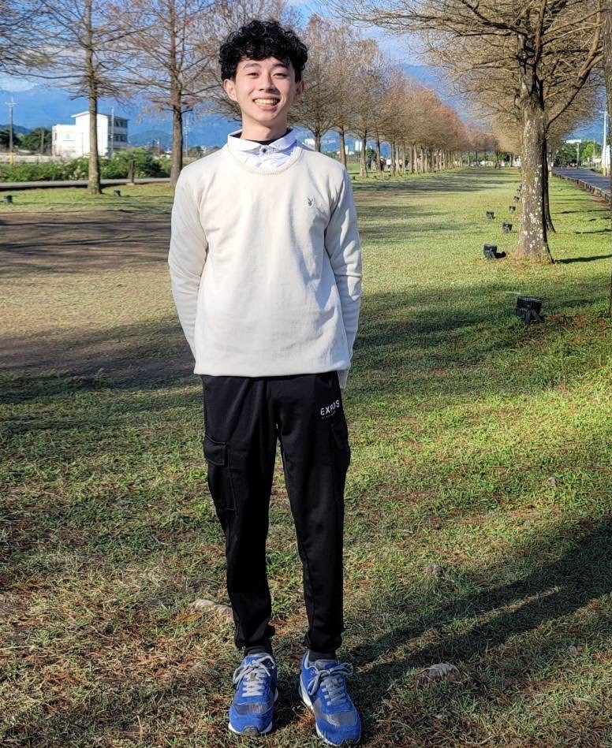
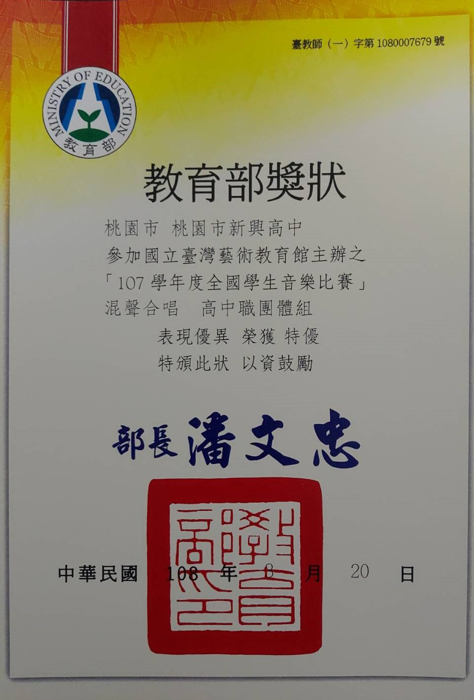
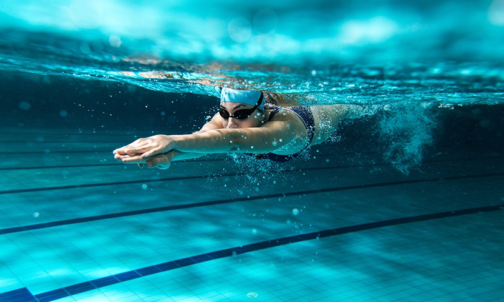

個人基本資訊
不努力不會成功，但不努力肯定很輕鬆

大家好，我的名字是蕭勛夫，現在正就讀中原大學資訊管理學系，敝人我民國91年次出生
生肖屬馬，星座巨蟹座，血型AB，我生性較為靦腆害羞，對於喜愛的事物非常投入，喜歡聽音樂，
玩電動遊戲，身邊的朋友少但都是交心的好朋友。歡迎各位跟我交朋友，一起玩遊戲更是歡迎，謝謝大家
個人經歷


我的人生經歷現階段雖活的短暫，但也有不少的經歷可以和大家分享，在我國小的暑假當中，幾乎天天泡在游泳池裡，
因此造就了我很會游泳的功夫(目前學會的最泳式為:蝶式)高中時則是參加了熱音社以及合唱團，這兩種社團有著一樣卻也不一樣的地方，
熱音社為純遊玩性質而合唱團則否，在兩種社團當中熱音社給我了社交的技能居多，而合唱團則是以技術為居多，這兩種社團的參與感完全不同，
在高中三年當中參加合唱團比賽得到全國優勝，對於我來說這是人生高中階段當中的輝煌時刻，而熱音社則是讓我遇見許多不同人生觀的朋友們，
也讓我受益良多。(p.s.照片左邊為全國比賽優勝獎狀)
個人專業與技能
興趣和專長對我而言其實都是一樣的，我喜歡聽音樂也擅長唱歌，電腦的部分則是和就讀資管系有一點相關，畢竟對於電腦這領域方面我都多也因為玩電腦的關係而有所接觸，
所以在打遊戲方面算是興趣帶入專業領域的喔。
聯絡資訊
如有任何問題可用以上社群媒體聯絡喔，感謝閱覽!